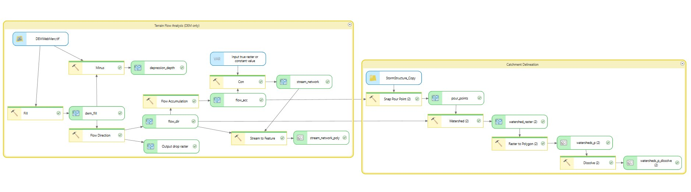
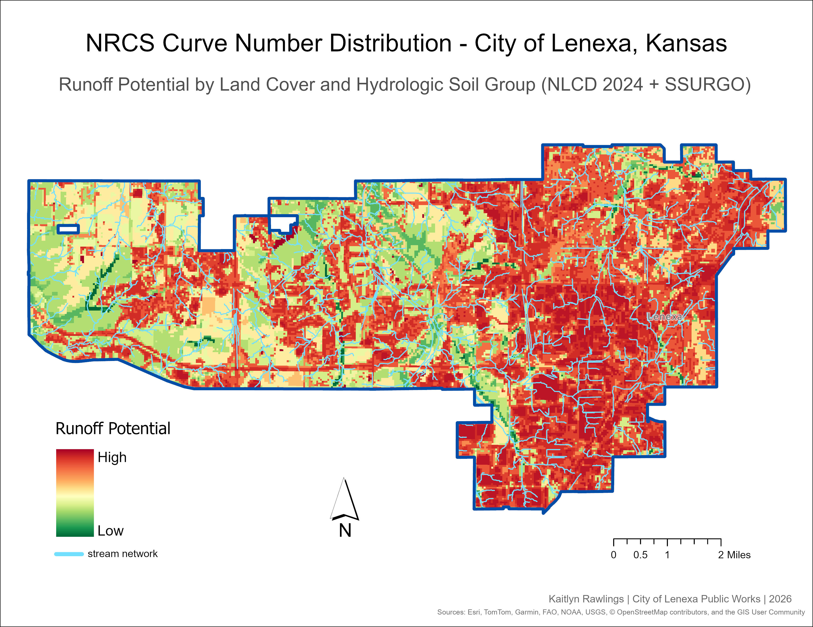
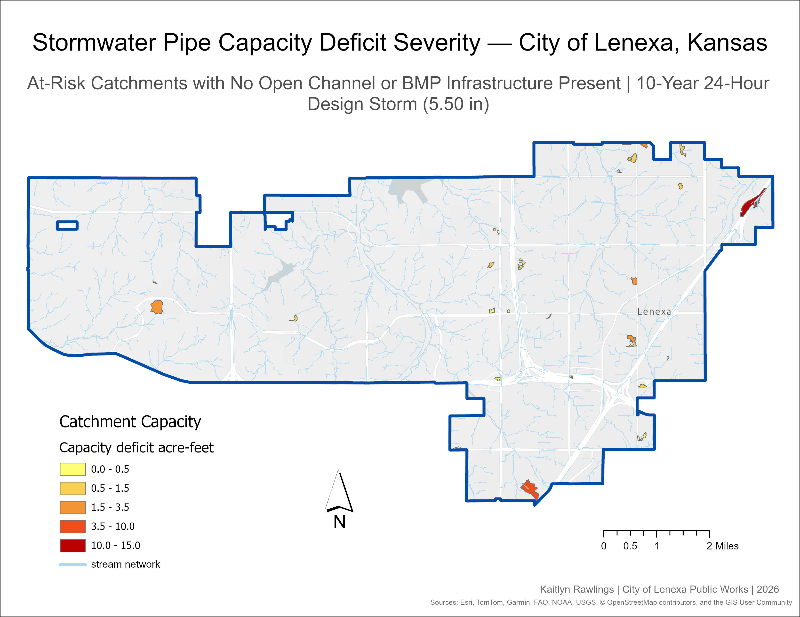

Spatial Analysis · City of Lenexa, KS · April 2026
Citywide Stormwater Catchment Delineation
& Pipe Capacity Analysis
View Full Technical Documentation (PDF)

Project Overview
This project delineates stormwater catchment areas and examines citywide pipe capacity across the City of Lenexa, Kansas. Using a 1-meter resolution DEM and the D8 flow routing algorithm, terrain analysis characterizes surface flow direction and accumulation to delineate 15,615 catchment polygons from storm inlet structure locations.
Custom Python scripts then calculate pipe capacity using Manning's equation and estimate runoff volume using the NRCS TR-55 method with a 10-year 24-hour design storm depth of 5.50 inches. Catchments where runoff exceeds pipe capacity are flagged as potential flood risk locations, with an adjusted flag accounting for open channel and BMP infrastructure present within at-risk catchments.
Key Output
15,615 catchment polygons · 5,222 pipe-assessed catchments · 98.7% adequate capacity · 33 high-priority at-risk locations identified
Data Sources
1-meter DEM · Lucity Storm Structures & Conduits · BMP Assets · NLCD 2024 · USDA SSURGO · NOAA Atlas 14
Skills Demonstrated
DEM Terrain Analysis · Catchment Delineation · ModelBuilder · Python / arcpy · Manning's Equation · NRCS TR-55 · Stormwater GIS
Workflow
Four-Phase Analysis

Phase 1
Terrain Flow Analysis
The analysis started with terrain flow analysis to establish how water moves across the landscape. The 1-meter DEM was processed through Fill, Flow Direction (D8), and Flow Accumulation to characterize surface drainage. A stream network was extracted where flow accumulation exceeded 100,000 cells, and a depression depth raster was generated to identify locations where surface ponding is likely.


Phase 2
Catchment Delineation
Storm inlet structures served as pour points — the locations where surface runoff enters the pipe system. Inlets were filtered by type, snapped to the nearest high-accumulation cell within 15 meters, and used as inputs to the Watershed tool to delineate contributing drainage areas. The result was dissolved by structure number to produce 15,615 catchment polygons.
Phase 3
Pipe Capacity Analysis
A custom Python script (catchment_capacity.py) applied Manning's equation to calculate full-flow pipe capacity for each catchment's connected enclosed gravity pipes. Where slope data was null — approximately 85% of records — a default of 1.0% was applied per City of Lenexa design standards. Total capacity was summed per inlet and normalized by catchment area.
Q = (1/n) · A · R2/3 · S1/2
Q = flow rate · n = Manning's roughness
A = cross-sectional area · R = hydraulic radius · S = slope
Phase 4
Runoff & Risk Assessment
A second script (catchment_runoff.py) estimated runoff volume per catchment using NRCS TR-55, combining NLCD land cover with SSURGO hydrologic soil groups to derive area-weighted curve numbers via Zonal Statistics. Catchments where runoff exceeded pipe capacity were flagged as at-risk, with an adjusted flag accounting for open channel and BMP presence.
Q = (P − 0.2S)² / (P + 0.8S) where S = (1000/CN) − 10
Q = runoff depth (in) · P = rainfall depth (in)
S = max soil retention · CN = curve number
Maps & Results
Four maps were produced to visualize the results. Together they tell a complete story of Lenexa's stormwater infrastructure: from land surface runoff potential to flood control distribution, to where risk exists and how severe it is.

Map 1 — NRCS Curve Number Distribution. Runoff potential across Lenexa by land cover and hydrologic soil group. Higher values (red) indicate impervious surfaces and slow-draining soils; lower values (green) indicate permeable, vegetated areas. Stream corridors show notably lower runoff potential.

Map 2 — Open Channel & Flood Control BMP Distribution. Catchments symbolized by total open channel linear footage, with flood control BMP facilities overlaid. 1,981 catchments contain open channel footage; 558 intersect a BMP. Newer western subdivisions concentrate engineered detention; older eastern neighborhoods rely more on the pipe network.

Map 3 — Flood Risk Assessment. Adjusted flood risk for a 10-year 24-hour storm. Of 5,222 pipe-assessed catchments, 98.7% show adequate capacity. 66 were flagged at-risk; only 33 had no supplemental infrastructure — making them the highest priority for field verification.

Map 4 — Pipe Capacity Deficit Severity. The 33 highest-priority at-risk catchments symbolized by deficit volume in acre-feet. Deficits range from 0.002 to 49.5 ac-ft (median 0.54). Severe deficits in the flat western areas are likely D8 routing artifacts and should be field-verified before any infrastructure conclusions are drawn.
Conclusion
Findings
This analysis provides a citywide baseline assessment of stormwater infrastructure capacity across Lenexa. Of the 15,615 catchments delineated, 5,222 had sufficient pipe attribution to be assessed — and 98.7% showed adequate capacity for the 10-year 24-hour design storm, reflecting a well-maintained system.
The adjusted risk assessment narrows the 66 at-risk catchments down to 33 with no supplemental infrastructure present. These are the highest priority locations for field verification, where the model identifies a deficit and no open channel or BMP data exists to suggest the risk may be mitigated.
The open channel and BMP map reveals that much of Lenexa's flood control capacity lies outside the enclosed pipe network — an important qualifier when interpreting risk results in infrastructure-rich areas. Taken together, these maps don't paint a picture of a stormwater crisis. They identify where to look, characterize what infrastructure exists, and give the city a data-driven foundation for prioritizing future capacity work.
Limitations
Known Constraints
D8 Flow Routing
On flat terrain the D8 algorithm assigns flow direction arbitrarily, producing unrealistically large catchment polygons. This is particularly present in Lenexa's flat western half — deficit values in those areas should be interpreted with caution.
Manning's Equation
Manning's assumes full-flow conditions free of blockages — an optimistic upper bound. Partial blockages, sediment, or aging infrastructure can all reduce actual capacity below the modeled value.
Incomplete Pipe Data
~85% of pipes had null slope and were assigned a 1.0% default. ~14% had null or zero diameter and were excluded entirely, meaning the model may undercount at-risk locations.
NOAA Atlas 14
The 5.50 inch design storm is a single point estimate for the city and doesn't account for spatial variation — a real storm of this magnitude wouldn't deposit uniform rainfall across the entire city.
Inlet-Only Pour Points
Only storm inlets were used as pour points — open channels and BMPs were not, meaning runoff draining to ditches or detention basins gets absorbed into the nearest inlet catchment, which may not reflect actual drainage paths.
Open Channel & BMP Capacity
Open channel and BMP infrastructure is inventoried but hydraulic capacity was not computed — cross-section geometry and stage-storage curves weren't available. Both are treated as qualitative context only.
SSURGO Coverage
SSURGO had no defined NoData value. Cells outside coverage were defaulted to hydrologic soil Group C. ~40% of catchments in the western city were affected by this gap.
Tools & Resources
Code & Documentation
Tools Used
ArcGIS Pro ModelBuilder · Python / arcpy · ArcGIS Spatial Analyst · CentralSquare / Lucity · NOAA Atlas 14 · NLCD · SSURGO · Claude (Anthropic)
Scripts & Repository
Both Python scripts are generalized for reuse and available on GitHub — field names, design storm parameters, Manning's n values, and BMP type codes are all configurable at the top of each script.
View on GitHubReferences
- ASCE. (1992). Design and Construction of Urban Stormwater Management Systems. No. 77.
- Anthropic. (2026). Claude [AI language model]. https://claude.ai
- Chaudhry, M. H. (2008). Open-Channel Hydraulics (2nd ed.). Springer.
- O'Callaghan, J. F., & Mark, D. M. (1984). The extraction of drainage networks from digital elevation data. CVGIP, 28(3), 323–344.
- Perica, S., et al. (2013). NOAA Atlas 14, Volume 8. NOAA, National Weather Service.
- U.S. Geological Survey. (2024). National Land Cover Database (NLCD). MRLC.
- USDA NRCS. (1986). Urban Hydrology for Small Watersheds, TR-55 (2nd ed.).
- USDA NRCS. (n.d.). Web Soil Survey — SSURGO. https://websoilsurvey.nrcs.usda.gov/